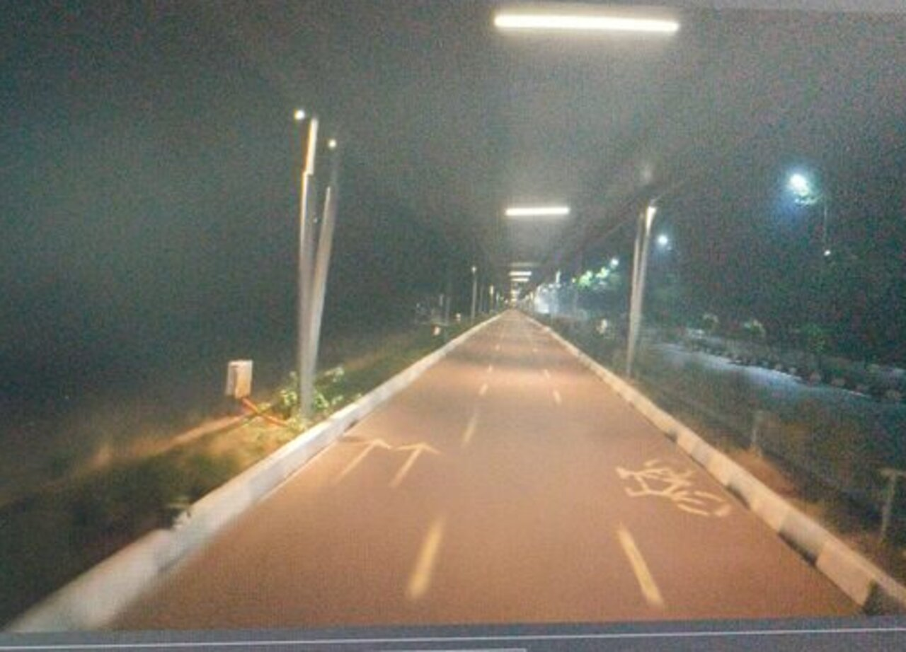
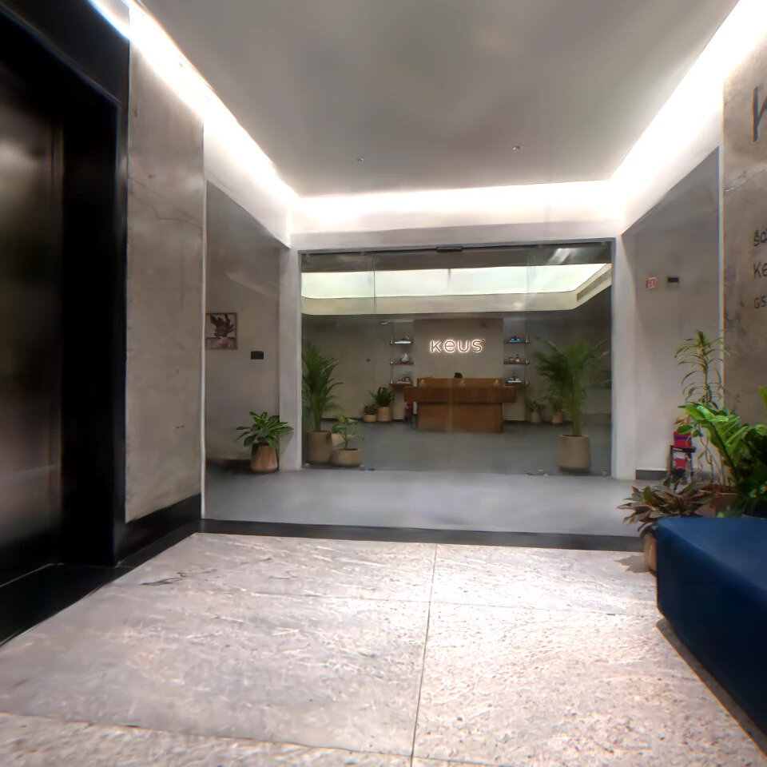
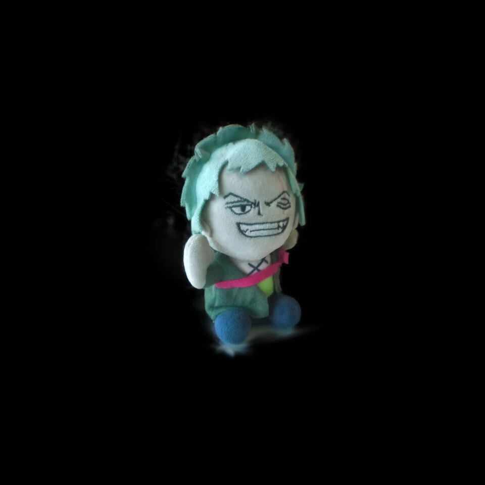

Gaussian Splats
Captured on camera, explorable in 3D
Three captures at three very different scales: a cycle track at night, an office lobby and a toy on my desk. Each one loads live from SuperSplat when you click it, so you can fly around inside it right here in the browser.
- Type
- Personal R&D
- Captures
- Street · Interior · Object
- Pipeline
- Video → camera tracking → 3DGS
- Viewer
- Live in the browser
01 · StreetNight Ride
A night ride down a Hyderabad cycle track, filmed on a bike with the camera held up in one hand. About a million splats, later brought into Unreal Engine for a cinematic.

Drag to look around, scroll to move. Open full screen ↗ · How I made it →
02 · InteriorKeus Office
The office entrance I walk into every morning: the lift lobby, the glass doors and the reception behind them. Glass, polished stone and plain walls make interiors a very different test, and a first step towards digital twins of real rooms.

Drag to look around, scroll to move. Open full screen ↗
03 · ObjectZoro Plush
Something much smaller: a Zoro plush, captured all the way around and isolated on black. Soft fabric and fuzzy hair are hard to model by hand but come out naturally as splats, so you can spin it and get close to the stitching.

Drag to look around, scroll to move. Open full screen ↗